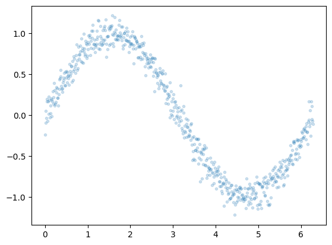
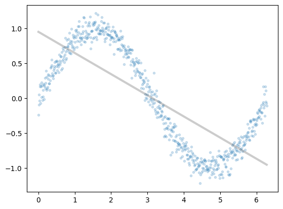

import torch
import torch.nn as nn
from torch.nn import functional as fn
from torch.autograd import Variable
class MLRegP(nn.Module):
def __init__(self, input_dim, hidden_dim, nonlinearity = fn.tanh, additional_hidden_wide=0):
super(MLRegP, self).__init__()
self.fc_initial = nn.Linear(input_dim, hidden_dim)
self.fc_mid = nn.ModuleList()
self.additional_hidden_wide = additional_hidden_wide
for i in range(self.additional_hidden_wide):
self.fc_mid.append(nn.Linear(hidden_dim, hidden_dim))
self.fc_final = nn.Linear(hidden_dim, 1)
self.nonlinearity = nonlinearity
def forward(self, x):
x = self.fc_initial(x)
out_init = self.nonlinearity(x)
x = self.nonlinearity(x)
for i in range(self.additional_hidden_wide):
x = self.fc_mid[i](x)
x = self.nonlinearity(x)
out_final = self.fc_final(x)
return out_final, x, out_initHow Sigmoids Combine
Visualizing neural network function approximation through hidden layer activations.
neural-networks
optimization
visualization
Explores how sigmoid activation functions combine in MLPs to create increasingly complex function approximations. Trains neural networks with varying architectures — different numbers of hidden layers and widths — visualizing how hidden layer representations enable the network to learn underlying functions.
%matplotlib inline
import numpy as np
import matplotlib.pyplot as plt
x = np.arange(0, 2*np.pi, 0.01)
y = np.sin(x) + 0.1*np.random.normal(size=x.shape[0])
xgrid=x
ygrid=y
plt.plot(x,y, '.', alpha=0.2);
xgrid.shape(629,)from sklearn.linear_model import LinearRegression
est = LinearRegression().fit(x.reshape(-1,1), y)
plt.plot(x,y, '.', alpha=0.2);
plt.plot(x,est.predict(x.reshape(-1,1)), 'k-', lw=3, alpha=0.2);
xdata = Variable(torch.Tensor(xgrid))
ydata = Variable(torch.Tensor(ygrid))import torch.utils.data
dataset = torch.utils.data.TensorDataset(torch.from_numpy(xgrid.reshape(-1,1)), torch.from_numpy(ygrid))
loader = torch.utils.data.DataLoader(dataset, batch_size=64, shuffle=True)dataset.tensors[0].shape, dataset.tensors[1].shape(torch.Size([629, 1]), torch.Size([629]))def run_model(model, epochs):
criterion = nn.MSELoss()
lr, epochs, batch_size = 1e-1 , epochs , 64
optimizer = torch.optim.SGD(model.parameters(), lr = lr )
accum=[]
for k in range(epochs):
localaccum = []
for localx, localy in iter(loader):
localx = Variable(localx.float())
localy = Variable(localy.float())
output, _, _ = model.forward(localx)
loss = criterion(output, localy)
model.zero_grad()
loss.backward()
optimizer.step()
localaccum.append(loss.item())
accum.append((np.mean(localaccum), np.std(localaccum)))
return accum